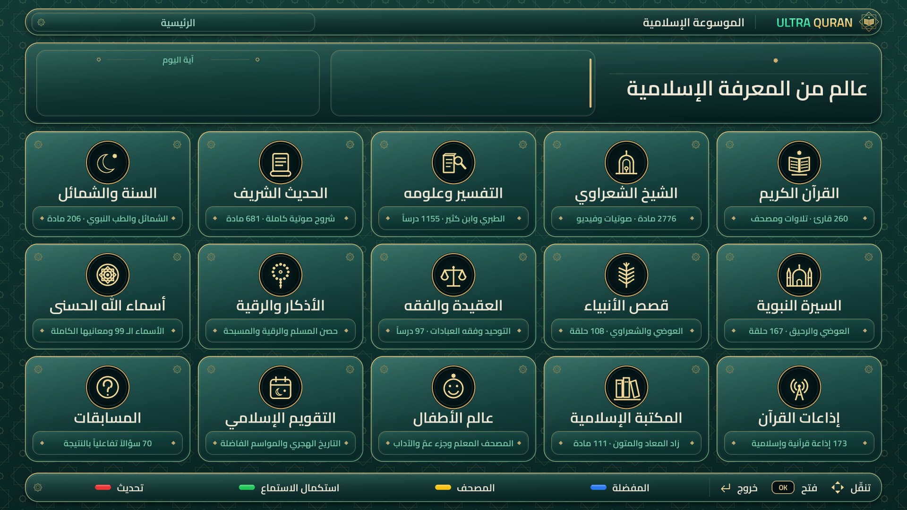

الترا قرآن
ULTRA QURAN
تلاوات ٢٦٠ قارئ، ومصحف مزخرف بالتفسير،
وموسوعات العلماء والمكتبة… على شاشة التلفزيون
Recitations, an illuminated Mushaf and the great scholars, on your TV.
الموسوعة الإسلامية
Enigma2 & DreamOS